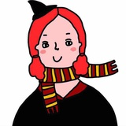

张春 作品索引
*文字资料由
zhe & Yoehson
整理
一个因常常生病不得不屡获奇功的人
一个怀着充沛深情的失败的发明家
目前的职业是著名冰淇淋师
和“犀牛故事”App的主编

单集
我为什么不想被拍成电影 [演讲]
TEDxFZU 2016年度大会 | 张春
[演讲稿]
互联网时代的写作者 [演讲]
互联网时代的写作者 | 张春
[演讲稿]
无论怎样都幸福
无论怎样都幸福
她的声音
叶之隧道
难过(微信公众号关键词：难过)
小店某一天
我喜欢你
燕子窝，春天到夏天
吃蚕豆
描述一个感到幸福的瞬间
作为一个废物我是怎么样跑步的
一个有关孤独的故事
夏天刚来（微信公众号关键词：夏天）
宇宙说要吃牛肉粉丝汤
相关链接：心理学你妹第四期：拖延症-揭示宇宙的秘密/21'42''开始
微信公众号关键词：箱根
茫茫宇宙，感谢有人和我一同真实漂浮
“好希望我能写出来点什么”
这里还有个倒霉蛋
广播
FM94厦门旅游广播 光和时间（限时公开）
厦门音乐广播 潮流时代（限时公开）
厦门闽南之声 Just闽南（限时公开）
录音整理
多集
心理学你妹（主播：陈海贤|李松蔚|张春）
第一期：拒绝别人为什么这么难
第二期：自恋的不自恋
第三期：哈利波特心理学[上]摄魂怪和守护神
第四期：拖延症-揭示宇宙的秘密
第五期：有关真爱的几件小事[上]
第六期：社交真的很恐怖
第七期：请我吃饭
第八期：一封陌生女人的来信
第九期：被嫌弃的松子
第十期：乐观过大年
第十一期：让你有钱
第十二期：咪蒙大战papi酱
第十三期：新年爱快乐不快乐
知乎Live
如何书写出真实、独特的自己（付费音频）
其他
写作课
怎样记住你一生里的某一刻？ | 张春的生活写作课堂
感受力up！把你独特的世界写成故事 | 张春生活写作课堂 2.0
表情达意，可以学习 | 张春生活写作课 3.0
用写作给生活建一条底线 | 张春写作课堂4.0
和作家张春一起连写5天！比过年爽！
甜饼干隐修会
添加“生活写作”微信公众号，每期开始会通知
出版物
《一生里的某一刻》
《一生里的某一刻（增订本）》
《在另一个宇宙的1003天》
社交网站账号
知乎
豆瓣
公众号
张春酷酷酷（ID：aokukuku）
生活写作（ID：life2story）
Back to Top